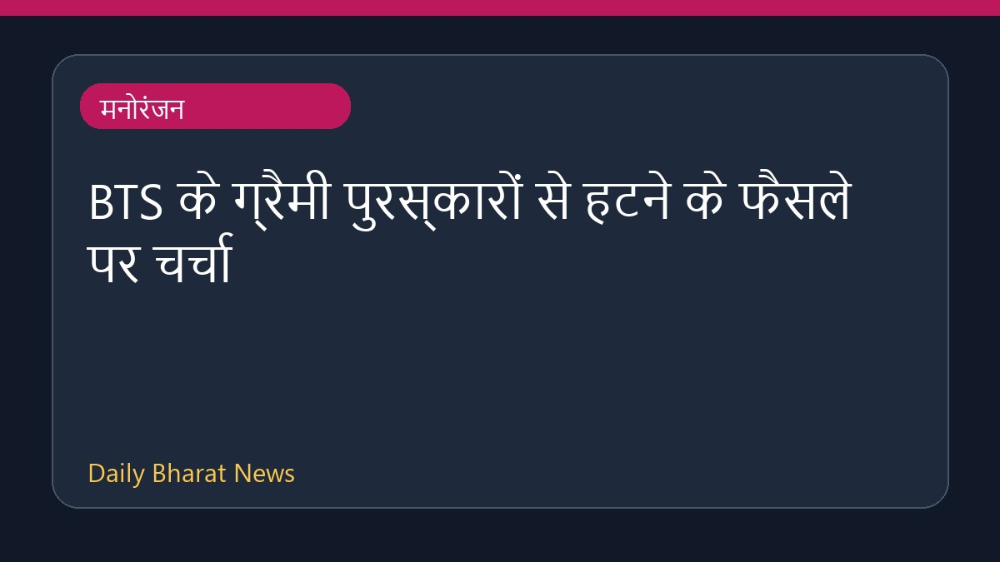

BTS के ग्रैमी पुरस्कारों से हटने के फैसले पर चर्चा

हाल ही में मनोरंजन जगत से मिली खबरों के अनुसार, प्रसिद्ध संगीत बैंड बीटीएस ने आगामी ग्रैमी पुरस्कारों के लिए अपना संगीत प्रस्तुत नहीं करने का निर्णय लिया है। इस कदम के पीछे नए 'एशियन पॉप' श्रेणी की शुरुआत का विरोध बताया जा रहा है। इस मामले पर विभिन्न मीडिया रिपोर्ट्स में विश्लेषकों का मानना है कि बैंड का यह फैसला रिकॉर्ड अकादमी की कार्यप्रणाली और पुरस्कार समारोहों में कलाकारों के साथ होने वाले व्यवहार पर कई सवाल खड़े करता है। इस संबंध में अभी विस्तृत जानकारी सीमित है।
मूल स्रोत: Entertainment Sources
BTS’ Grammy Decision: Was the Band Getting Ahead of Another Awards Show Sidelining? (Critic’s Take) - Billboard ↗
BTS’ Grammy Decision: Was the Band Getting Ahead of Another Awards Show Sidelining? (Critic’s Take) - Billboard ↗